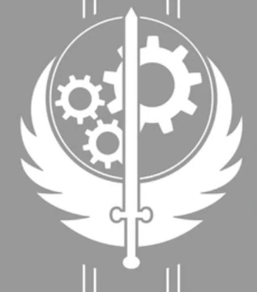
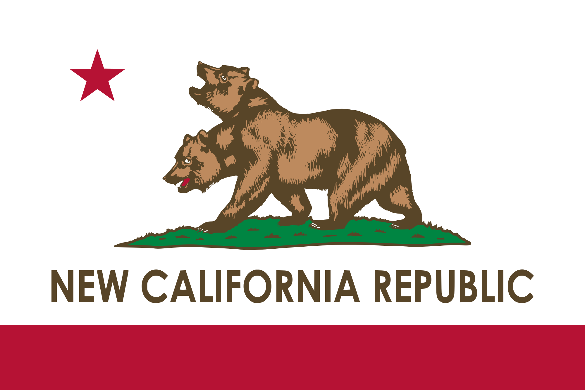

Confraternita D'acciaio
fu fondata nel 2077 da roger maxson un soldato statunitense che si ribellò dopo aver scoperto gli esperimenti del FEValla base di Mariposa. Insieme ad altri disertori, fugge e fonda una società segreta dedicata a preservare e controllare la tecnologia pre-guerra.. Credono che la tecnologia avanzata (energia nucleare, armi, robotica) sia troppo pericolosa per essere lasciata nelle mani di chiunque. La loro missione è recuperarla, studiarla e custodirla — spesso sottraendola alle comunità del Wasteland, il che li rende ambigui: protettori della conoscenza o élite tecnologica egoista? hanno una rigida gerarchia militare, ci sono gli inziati, poi cavalieri e scribi a seconda del percorso scelto (cavaliere per il combattimento e scriba per lo studio delle armi) poi ci sono i paladini che sono i soldati d'elite poi gli anziani le cariche più prestigiose della confraternita e la massima carica che è il sommo anziano che dirigie le riunioni degli anziani. poi per le tutte le categorie ci sono la versione anziana es: cavaliere anziano, dati per la loro esperienza. e il capo es: capo cavaliere che comanda tutta la categoria di cui è capo (cavalieri, scribi, paladini)

Republica della Nuova California NCR
Nasce dai discendenti del Vault 15, che fondano la città di Shady Sands in California intorno al 2186. Cresce rapidamente diventando una vera nazione-stato. Tenta di ricreare un governo democratico simile agli Stati Uniti pre-guerra: presidente eletto, senato, costituzione, esercito regolare (NCR Rangers e Troopers). è la fazione più "civilizzata" e organizzata del Wasteland, con agricoltura, commercio e moneta stabile (i dollari NCR).Estremamente burocratica, corrotta in molte sue parti, e accusata di imperialismo — espande il proprio territorio anche con la forza, sfruttando risorse di altre comunità (vedi conflitto per il Mojave in New Vegas).
L'Istituto
Un'organizzazione segreta di scienziati che operano sottoterra. Creano sintetici — androidi così avanzati da essere indistinguibili dagli umani. La loro vera agenda è sconosciuta all'inizio del gioco. Molti nel Commonwealth li temono come fantasmi o leggende.
Minutemen
Un gruppo di miliziani che cercano di proteggere i civili del Commonwealth. Erano potenti in passato, ma quasi dissolti all'inizio del gioco. Il protagonista può aiutare a ricostruirli. Sono la fazione più "neutrale" e orientata alla difesa della comunità.